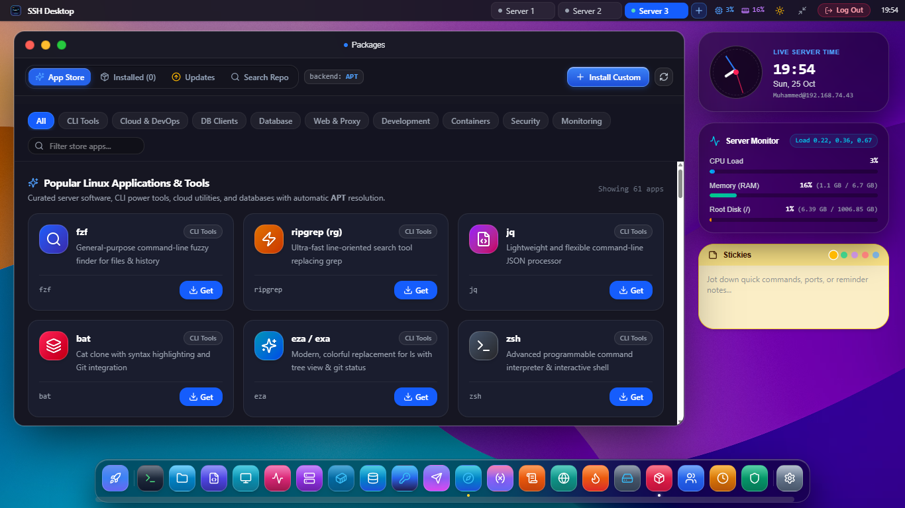

Universal Linux Package Manager GUI
Manage, upgrade, and install Linux software without command-line headaches. Native support for APT, DNF, YUM, Pacman, and APK with pending upgrade badges, dependency graphs, and repository auditing.

One Unified GUI for Any Linux Distribution
Intelligent Backend Detection
Automatically detects the native package engine on connect — whether it is apt on Ubuntu, dnf/yum on Rocky/Fedora, pacman on Arch, or apk on Alpine.
1-Click Security Patching
Scans upstream repositories for security notices and pending patches. Apply critical CVE bugfixes in a single click with full transaction logs.
Repository Source Auditor
Inspect, enable, or disable upstream mirrors and PPAs in /etc/apt/sources.list or /etc/yum.repos.d/ without accidental syntax errors.
Supported Package Systems & Distributions
| Package Manager | Target Linux Distributions | Supported Operations | Safety Mode |
|---|---|---|---|
| APT | Ubuntu 20.04/22.04/24.04, Debian 11/12, Raspberry Pi OS | Search, install, upgrade, purge, dist-upgrade, clean | Pre-upgrade dependency simulation |
| DNF / YUM | RHEL 8/9, Rocky Linux, AlmaLinux, CentOS Stream, Fedora | Search, groupinstall, security update, history rollback | Transaction checkpointing |
| Pacman | Arch Linux, Manjaro, EndeavourOS | Sync (-Syu), search (-Ss), orphaned cleanup (-Qtdq) | Mirror ranking verification |
| APK | Alpine Linux 3.16 - 3.20 (Docker containers & VPS) | Add, delete, update, upgrade, cache cleanup | Ultra-low memory footprint |
Frequently Asked Questions
Does SSH Desktop support cleaning orphaned packages and cache?
Yes. A dedicated "System Cleanup" button runs apt autoremove --purge or dnf autoremove, freeing gigabytes of wasted disk space from superseded kernel images and stale package archives.
Can I see the live console output during package installation?
Yes. A collapsible slide-down drawer streams real-time stdout and stderr from the package manager, giving you full visibility into dpkg triggers, systemd daemon restarts, and pre/post-installation scripts.
What happens if a package configuration triggers a debconf prompt?
SSH Desktop runs transactions in non-interactive mode (DEBIAN_FRONTEND=noninteractive) while safely preserving default existing configuration files (--force-confold) to prevent hung unattended upgrades.
Upgrade Your Server Software with Confidence
Download SSH Desktop for Windows, macOS, or Linux. Free and open source with 22 built-in server administration tools.